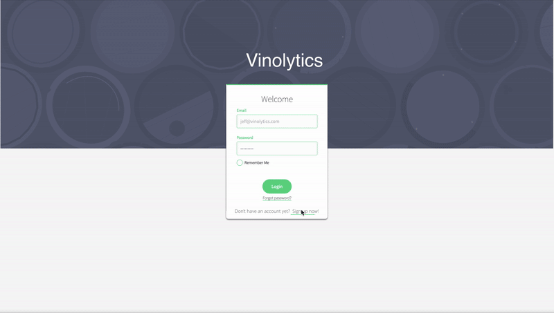

Bose
Led design sprints to brainstorm and kickoff development of a new exploratory audio application
Sprint Leading, UX Design, Visual Design, Wireframing, Prototyping

A small Boston-based wine management platform, helping users connect to producers and sellers and to organize their collections.
Vinolytics was taking off, and as they did so their landing page was becoming outdated and unsuited for their growing user base. Initially the site was created as a marketing page to provide a brief description of the product and offered a simple entry button directing existing users into their portal. As such, it was insufficient as a marketing page for search engine results or users exploring the site from word-of-mouth referrals. The site was outdated and didn’t provide any helpful information on company info, pricing, or other platform benefits to would-be clients. Sitting down to analyze the existing site with the CEO allowed me to understand what she was looking for in a redesign: modernize the site, make it attractive to both existing and potential customers, and streamlining the onboarding process.
My contract limited my bandwidth on the project which presented the challenge of optimizing my resources and focusing on a few crucial elements to solve rather than a full redesign that would have ideally occurred. Because of this restriction, I sought to tackle three elements that would provide the greatest impact for the small time commitment:

I began by auditing the existing site and sketching out how a redesigned architecture could look, breaking the site up into logical sub-menus with a clear navigation. I reworked the rough sketches into a more detailed navigation tree to review with the CEO, laying out how the redesigned site would flow. We emphasized the easy navigation and increasing call-to-actions, a feature the site lacked almost entirely.
Upon approval of the new navigation, I needed to update the visuals and aesthetic of the site for a more modern appearance. I used a combination of banner images with overlaid text coupled with text and images emphasized by white negative space. Using cooler and more muted color tones for navigation bars and headers, it allowed me to showcase certain icons or text with more flashy colors, highlighting the CTAs and any important information. To match the more modern feel, we used a sans-serif font combination of Futura and PT Sans. The results felt like a modern site with a calming and inviting feel for a user of any wine connoisseur level.
The final area for improvement was clearing up the onboarding wizard. Besides basic improvements to margins, text, and button placement, it was not easy for a user with no knowledge of wine or of the platform to complete. To simplify the process, I deconstructed the existing wizard and reorganized it into a more logical progression, breaking existing single steps out into multiple steps in some places, and providing more clarification of the process as it advances. Additionally, data showed that one of the more common reasons for failing to complete the onboarding was a feeling of overwhelmingness and fear of entering information incorrectly. To counter this metric, I reduced the amount of required information necessary to successfully complete the wizard, allowing users to enter information they would certainly have available and skip information that could be entered later. This dramatically cleared up the onboarding process and reduced the fear an overwhelming process.
The redesigned site and wizard created a more structured and professional looking product. It allowed new visitors a clear presentation of what the product was offering and presenting its value, and existing users a more confident feeling of the substantiveness of the product they were paying for.
Led design sprints to brainstorm and kickoff development of a new exploratory audio application
Sprint Leading, UX Design, Visual Design, Wireframing, Prototyping
Modernized and increased efficiency of platform used to manage buildings and properties
Sprint Leading, User Research, UX Design, Information Architecture, Wireframing

Optimized method for increasing time and accuracy among delivery drivers
UX Design, Wireframing, Prototyping